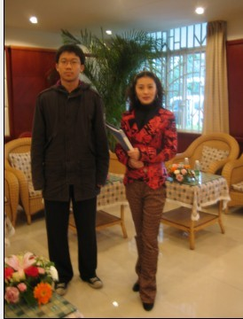
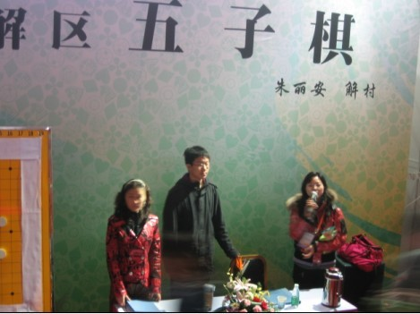
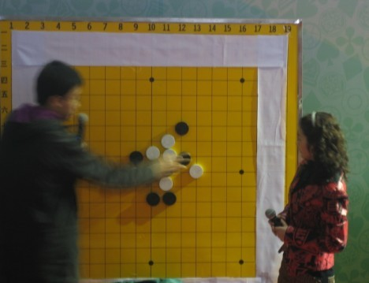
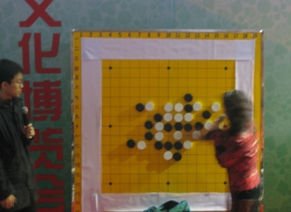
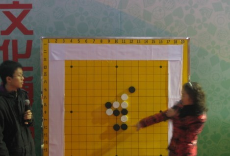
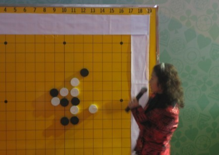
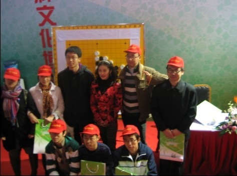
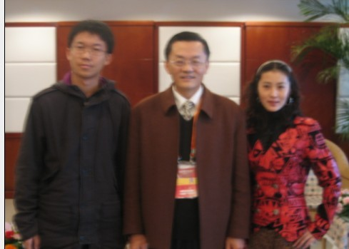

中国第一届智运会温江挂盘解说快讯
#1 中国第一届智运会温江挂盘解说快讯作者：五子痴 发表时间：2009-11-15 15:23:26
十一月十五日，早上成都天气阴，下着小雨。茗弈社掌门人小刀（朱丽安）和茗弈球圣（解村），七点半出发来到温江体育馆，作中国第一届智运动会五子棋的挂盘解说。九点半，组委会介绍两位老师宣布解说正式开始。


虽然天气不好，但爱好者们仍来了不少，西南财经大学也组织了学生来观摩学习。这次讲解了两局棋，2009名人赛——顾炜和贺茂雪；2009全锦赛——吴嫡和艾显平。




讲解中，两位老师中途提问，让大家回答，积极把观众热情调动起来，最后邀请了一名观众上台与解村对局，小刀讲解指导。最后观众与两位老师签名合影。

组委会表示对本次五子棋讲解非常满意，两位老师与观众的互动也取得了非常好的效果。
最后中国棋院书记也亲自与两位老师合影留念。
［ 无尽 于 2009-11-15 15:25:13 时奖励此帖[金币加 20 威望加1］
［ 水月 于 2009-11-15 15:29:13 时花20金币送鲜花一朵］
［ 战龙在野 于 2009-11-15 15:29:14 时花20金币送鲜花一朵］
［ 梦醉南天 于 2009-11-15 15:31:01 时花20金币送鲜花一朵］
［ 闫荣辉 于 2009-11-15 15:31:22 时花20金币送鲜花一朵］
［ 千羽鹤 于 2009-11-15 15:31:30 时花20金币送鲜花一朵］
［ 胆小的骆驼 于 2009-11-15 15:34:52 时花20金币送鲜花一朵］
［ 裁决殿雪月 于 2009-11-15 18:29:47 时花20金币送鲜花一朵］
#2 Re:中国第一届智运会温江挂盘解说快讯作者：水月 发表时间：2009-11-15 15:29:39
比楼下那个早1秒#3 Re:中国第一届智运会温江挂盘解说快讯作者：无解 发表时间：2009-11-15 15:30:20
来抢个沙发 顶一票！#4 Re:中国第一届智运会温江挂盘解说快讯作者：战龙在野 发表时间：2009-11-15 15:30:30
哥看的是美女，不是棋
#5 Re:中国第一届智运会温江挂盘解说快讯作者：无解 发表时间：2009-11-15 15:31:38
 气人 手慢了
气人 手慢了#6 Re:中国第一届智运会温江挂盘解说快讯作者：梦醉南天 发表时间：2009-11-15 15:31:50
辛苦了，师傅，呵#7 Re:中国第一届智运会温江挂盘解说快讯作者：千羽鹤 发表时间：2009-11-15 15:31:53
还说要来占沙发的
#8 Re:中国第一届智运会温江挂盘解说快讯作者：战龙在野 发表时间：2009-11-15 15:35:12
以我专业狼友的眼光说一句：小刀的身材不错。色过。1024#9 Re:中国第一届智运会温江挂盘解说快讯作者：闫荣辉 发表时间：2009-11-15 15:41:55
 嗯~~8错。。。。。。
嗯~~8错。。。。。。#10 Re:中国第一届智运会温江挂盘解说快讯作者：王志伟123 发表时间：2009-11-15 16:57:35

#11 Re:中国第一届智运会温江挂盘解说快讯作者：索非亚 发表时间：2009-11-15 17:35:42
 战龙 同感同感 ~~~8过我的台词都被你抢说了
战龙 同感同感 ~~~8过我的台词都被你抢说了
#12 Re:中国第一届智运会温江挂盘解说快讯作者：战龙在野 发表时间：2009-11-15 17:37:52
你有这个忄就可以跟我去草榴 五月天混1024了。。#13 Re:中国第一届智运会温江挂盘解说快讯作者：ahaqcx 发表时间：2009-11-15 18:11:22
看到那棋盘只能说中国五子之路
哎
任重道远啊
#14 Re:中国第一届智运会温江挂盘解说快讯作者：裁决殿雪月 发表时间：2009-11-15 18:31:04
小刀好漂亮！#15 Re:中国第一届智运会温江挂盘解说快讯作者：飞哥 发表时间：2009-11-15 21:54:21
咋个用的围棋棋盘哟#16 Re:中国第一届智运会温江挂盘解说快讯作者：香雪美景 发表时间：2009-11-16 18:31:30
师傅好漂亮啊 ！
#17 Re:中国第一届智运会温江挂盘解说快讯作者：怪 发表时间：2009-11-16 18:44:44
挂盘都没个正式的五子棋棋盘？
哪怕把旁边锯掉都好啊，这样看着一点正式的感觉都没有。
#18 Re:中国第一届智运会温江挂盘解说快讯作者：lfzxdh 发表时间：2009-11-16 18:47:44
不得不说 楼上真的很仔细
还是我头像里的棋盘正式 嘿嘿
［ 茗弈小刀 于 2009-11-17 10:33:10 时花20金币送鲜花一朵］
#19 Re:中国第一届智运会温江挂盘解说快讯作者：茗奕的飞猪 发表时间：2009-11-17 10:39:44
真想去看比赛啊，羡慕，好好练棋，为茗奕争光
PS：刀刀叫朱丽安啊，气质很好嘛
#20 Re:中国第一届智运会温江挂盘解说快讯作者：lfzxdh 发表时间：2009-11-17 19:40:52
哈哈 人如其名~~
顺便支持下楼上~~
#21 Re:中国第一届智运会温江挂盘解说快讯作者：不再捣乱 发表时间：2009-11-17 21:14:18
=======上图对应的爱五子棋谱代码如下，以便你拆解：========
h8h7h10i6i10i7f7j7
======================================================